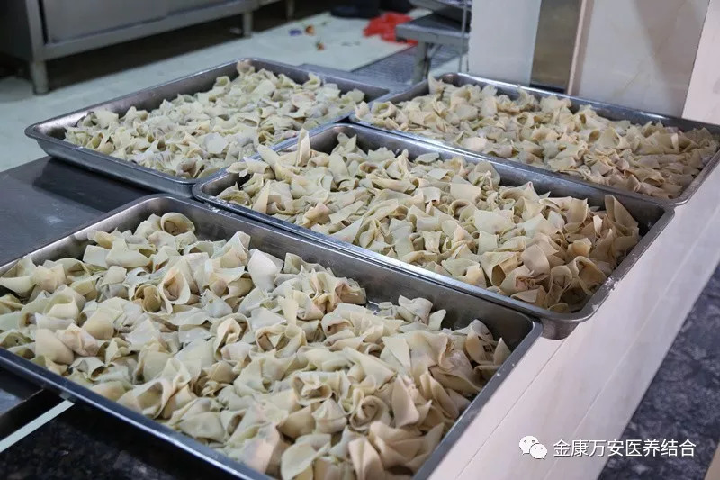
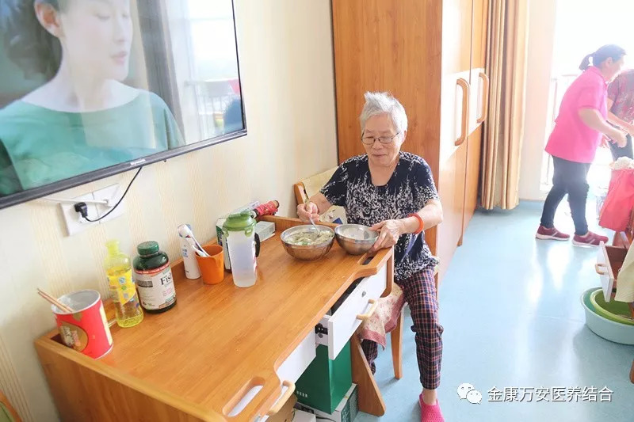
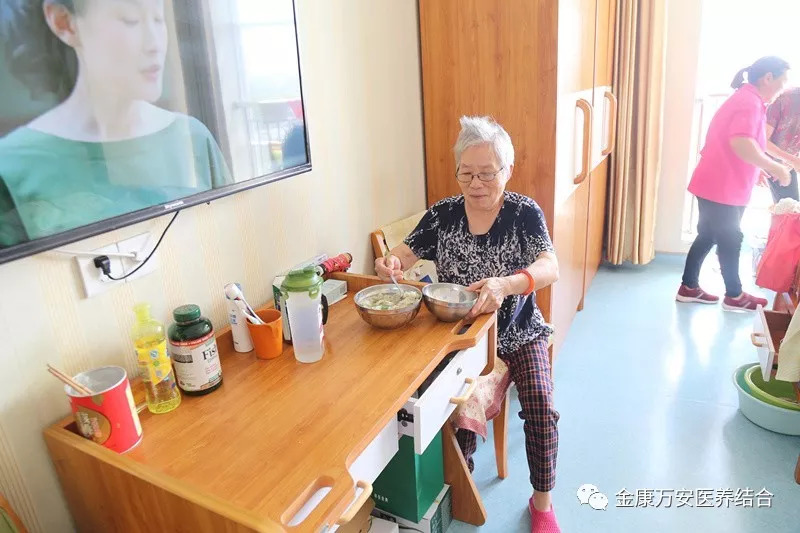

万安康复医院新闻
漯河万安康复医院、万安老年公寓进行医疗机构废物相关法律法规培训
人气: "" 时间：2018-09-05
为了让老人在万安老年公寓吃得好、住得好，让老人感受到家的温暖，9月6号上午，在漯河万安老年公寓的餐厅里不时响起欢声笑语，原来是养老部组织志愿者为我院老人包馄饨活动。
大家在完成自己本职工作之后，志愿报名参加活动的家人们齐聚餐厅，准备大显身手，在一番准备之后，包馄饨活动正式开始。

为了让老人们吃到放心、纯手工的馄饨，万安老年公寓餐厅师傅们提前准备好一大盆新鲜的馄饨陷和馄饨皮，志愿者们围坐在餐桌周围包起馄饨来。活动中，大家个个干的不亦乐乎，不一会，一个个奇形怪状的馄饨出来了，有圆的、有长的、有包子状的、有元宝状的，千奇百怪，不会包的向会包的学习，渐渐也能熟练地包出来漂亮的馄饨，大家都有说有笑，分享交流学习经验，场面十分热闹。
人多力量大
劳动创造美，通过大家的努力，不到两个小时，整整一大桌子形状各异的馄饨被大家包好了，馄饨里包的不仅是美味的肉馅，更含着大家真挚的情感。
午餐时间，餐厅师傅们将煮好的爱心馄饨送到老人们房间，看着老人们吃着包好的馄饨露出了灿烂的笑容，大家的心里都觉得都是值得的。

 


万安老年公寓致力于为每一位老人打造一个幸福养老、温馨养老、健康养老的理想去处。